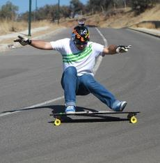

Styles_of_riding
This section describes styles you can choose to ride
The most popular style of riding are:
- cruising
- downhill
- freeride
- freestyle
Whether you plan on carving down sloped streets, cruising through the campus on your way to lectures, or just traveling long, flat stretches visiting your significant other living one county over, you need stability and comfort.
As far as the length goes, anything between 28 and 46 inches is OK, with the shorter boards being better for quick turns and sharp angles, and longer ones for carving at higher speeds due to greater stability. Moreover, longboards between 28 and 32 inches are ideal if you’re looking for the baby’s first, or if you’re a short rider, but tall boarders can also opt for these if they’re seasoned and confident enough.
Speaking of beginners, the most recommended size would be between 32 and 42 inches, irrespective of your height. So, if you’re tired of borrowing your friend’s board for short cruises (or they are), you might want to go for something in this range. On the other hand, if you need something for a longer, more relaxed ride, don’t be afraid to go over 40 inches. Keep in mind, though, that the weight grows with the length.
Freeriding implies riding hills at a decent speed, spicing it up with some slides and curbs, so it requires some skill and comfort with high speeds. Naturally, this also requires a stable board, so anything between 38 and 42 inches is ok. Don’t go below 38 inches, so you don’t compromise the stability, but also don’t go above 42, so you keep the maneuverability keep it from becoming too cumbersome.